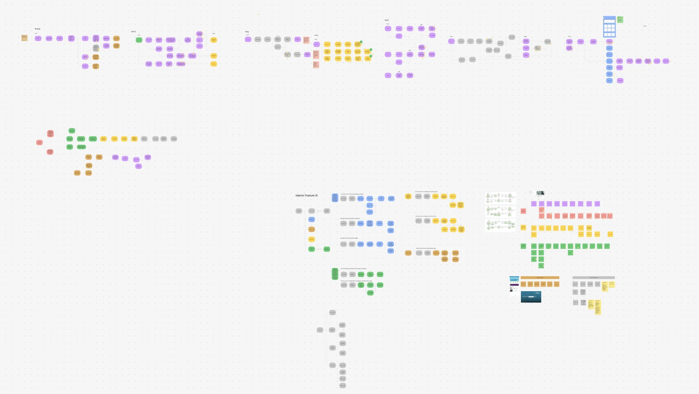
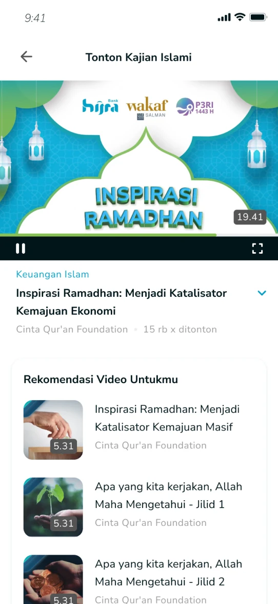
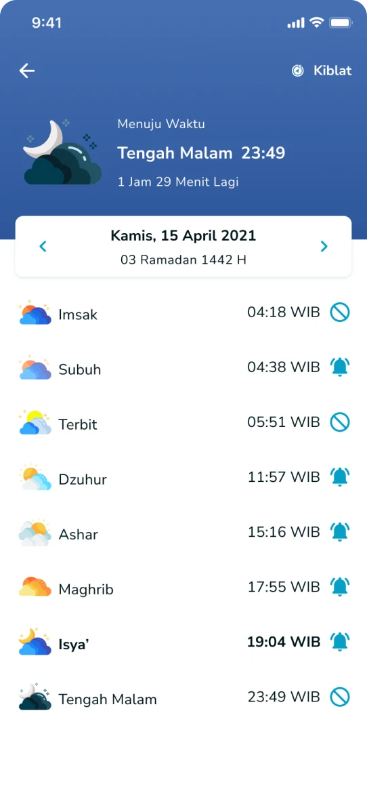

Giving people a reason to join before the bank launched
While Hijra's banking features waited for regulatory approval, research led us to everyday Islamic lifestyle features that made the app useful from the first day.
My part: I helped turn interview insights into the product direction, then designed the lifestyle features with product and business development.
- Role
- Product and interaction designer
- Year
- 2022
- Team
- Product, design, business development
- Outcome
- First 100,000 users

The problem: a bank without banking, for now
Hijra's early product had limited banking features while approval was in progress. Research showed people had little reason to register when the features they expected were not there yet.
What people needed every day
We focused on Muslim adults aged 20 to 35, including employees, entrepreneurs and students, and used interviews to find everyday needs the app could support beyond money.

The direction: a reason to come back
The direction brought together daily prayers and dhikr, Islamic events and recordings, questions answered by experts, and clearer prayer times. We also improved Quran reading, including the move from Indo-Pak to Uthmani script.


Delivery in one quarter
Product, design and business development shaped the direction together. The features were built over a quarter, supported by partnerships and programmes such as the Halfdeen series.
Outcome
Hijra reached its first 100,000 users. It was a team milestone, supported by product work and partnerships, not by design alone.
What I learned
When the expected product is not ready, research can find another reason for people to come. The strongest direction matched real motivations with what the team could deliver. Some research details remain confidential.
The 100K milestone is reported in the original project study and was a team achievement.